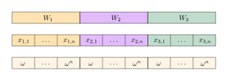
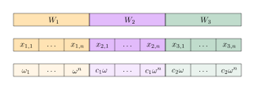

Let $\mathbb F$ denote a field and let $\mathbb F_p$ denote a prime field with $p$ elements.
One of the cornerstones of PLONK is an efficient statistical test for checking if two vectors $(a_1,\ldots,a_m), (b_1,\ldots,b_m)\in\mathbb F_p^m$ are a permutation of each other, i.e., for checking that $$ \forall i\in\{1,\ldots,m\}: a_{\sigma(i)} = b_i. $$
We use the shorthand notation $\sigma(a) = b$ for this statement. This statistical test implicitly uses the following Lemma.
Lemma.
Let $\mathbb F$ be a field and let $\mathbb F[X,Y]$ be the polynomial ring over $\mathbb F$ in variables $X,Y$. Furthermore, let $a_i,b_i\in\mathbb F$, for $i\in\{1,\ldots,m\}$, and let $\sigma\in S_m$ be a permutation. Then for any pairwise distinct $u_1,\ldots,u_m\in\mathbb F$ we have
$$\prod_{i=1}^m (a_i + u_i X + Y) = \prod_{i=1}^m (b_i + u_{\sigma(i)} X + Y) \Longleftrightarrow \sigma(a)=b.$$
Proof.
Since $\sigma\in S_m$ is a permutation, it holds
$$
\prod_{i=1}^m (a_i + u_i X + Y) = \prod_{i=1}^m (a_{\sigma(i)} + u_{\sigma(i)} X + Y).
$$
The direction “$\Longleftarrow$” is, hence, clear. For the direction “$\Longrightarrow$” we consider the following. The ring $\mathbb F[X,Y]$ is a unique factorization domain, and every factor in the products
$$
\prod_{i=1}^m (a_i + u_i X + Y),\; \prod_{i=1}^m (b_i + u_{\sigma(i)} X + Y)
$$
is irreducible. Furthermore, both products are monic in the variable $Y$. Since $u_1,\ldots,u_m$ are pairwise distinct, there is a bijective correspondence between the factors on the left and right side. This correspondence is given by
$$
a_{\sigma(i)} + u_{\sigma(i)} X + Y = b_i + u_{\sigma(i)} X + Y,
$$
for all $i\in\{1,\ldots,m\}$. As a consequence $a_{\sigma(i)}=b_i$, for all $i$. $\qed$
PLONK represents each column of the gate table (i.e., execution trace) as a polynomial. The evaluation domain for this polynomial representation are the powers ${\omega,\omega^2,\ldots,\omega^n}$ of a primitive $n$-th root of unity $\omega$.
In PLONK, we use above permutation check to prove the correct wiring of gates, i.e., that witness variables are set or copied correctly across multiple gates. Let’s say we have in total $m$ witness variables $(w_1,\ldots,w_m)$. We define the following permutation $\sigma\in S_m$: $$ \sigma(i)=j \Longleftrightarrow w_i = w_j. $$ In other words, if some witness variables are equal (i.e., copied), then $\sigma$ permutes the indices of these variables. The indices of uncopied variables are left untouched. In terms of cycle notation of permutations, this means that all witness variables with indices in a given cycle are the same. In fact, we are applying above permutation check lemma with the premise $a=(a_1,\ldots,a_m)=(b_1,\ldots,b_m)$. Hence, we are proving that $\sigma(a)=a$.
Example. Let’s say $m=6$ and it holds $w_1=w_3$. In this case, the permutation $\sigma$ is given by
$$
\sigma = (13).
$$
Assuming that, additionally, it holds $w_3=w_4$, we have
$$
\sigma = (134).
$$
Since the last situation is equivalent with $w_1=w_4=w_3$, also the following definition of $\sigma$ encoded the copy constraints correctly:
$$
\sigma = (143).
$$
Hence, to prove that $w_1=w_3=w_4$, we show the equivalent relation
$$
w = (w_1,w_2,w_3,w_4,w_5,w_6) = (w_3,w_2,w_4,w_1,w_5,w_6) = \sigma(w).\qex
$$
To put the cart before the horse, checking the copy constraints in PLONK involves the following chain of equivalent identities: $$ \begin{alignat*}{2} & \sigma(w) = w \\ &\Longleftrightarrow \frac{\prod_{j=1}^n f(\omega^j,X,Y)}{\prod_{j=1}^n g(\omega^j,X,Y)} = 1\\ &\Longleftrightarrow C_1(T,X,Y) = C_2(T,X,Y) = 0 \end{alignat*} $$ In practice, PLONK checks the last identity. The remainder of this article elaborates on the mechanics behind these equivalences.
For $n$ (vanilla) PLONK gates, the table layout of the gates consists of $n$ rows (one for each gate) and contains the $3$ witness columns $$ \begin{aligned} W_1 \coloneqq (x_{1,1},\ldots,x_{1,n}),\quad W_2 \coloneqq (x_{2,1},\ldots,x_{2,n}),\quad W_3 \coloneqq (x_{3,1},\ldots,x_{3,n}). \end{aligned} $$ These columns collect the left input, right input, and output of each (vanilla) PLONK gate $$ s_{1,i}\cdot x_{1,i} + s_{2,i}\cdot x_{2,i} + s_{3,i}\cdot x_{3,i} + s_{4,i}\cdot x_{1,i} x_{2,i} + s_{5,i}. $$
Each witness vector $W_i$ is encoded via the polynomial $$ W_i(X)\coloneqq \sum_{j=1}^n\mathcal L_j(X)\cdot x_{i,j} $$ over the evaluation domain ${\omega,\ldots,\omega^n}$. Here, the polynomials $\mathcal L_1(X),\ldots,\mathcal L_n(X)$ are the Lagrange basis polynomials for the $n$-dimensional $\mathbb F_p$-vector of all polynomials of degree at most $n-1$ with the property $$ \mathcal L_j(\omega^k) = \begin{cases} 1, & j=k,\\ 0, & \text{otherwise}. \end{cases}% $$
To prove the correct wiring of the witness vectors in PLONK, we concatenate the witness vectors $W_1,W_2,W_3$ and combine them into a single vector $(W_1,W_2,W_3)$ of length $3n$.1 The next figure illustrates this concatenation and, additionally, lists the evaluation domain of each $S_i$ when represented as a polynomial.

The goal is to apply the permutation argument to the combined vector $(W_1,W_2,W_3)$. We face the problem that each $W_i$ has the same evaluation domain $\omega,\ldots,\omega^n$. The permutation argument in above lemma, however, requires distinct elements $w_1,\ldots,w_{3n}$.
We, therefore, choose $c_1,c_2\in\mathbb F_p$ such that the sets $$ H \coloneqq \{\omega,\ldots,\omega^n\},\quad c_1H = \{c_1\omega,\ldots,c_1\omega^n\},\quad c_2H = \{c_2\omega,\ldots,c_2\omega^n\}, $$ are pairwise disjunct.2 Now, we have a domain of length $3n$ with truly distinct elements as the following figure depicts.

We define $w=(w_1,\ldots,w_{3n})$ with $$ w_{(i-1)n+j} \coloneqq x_{i,j}, $$ and $u=(u_1,\ldots,u_{3n})$ with $$ u_{(i-1)n+j} \coloneqq c_i\omega^j, $$ where $i=1,2,3$, $j=1,\ldots,n$, $c_0\coloneqq 1$, and $c_1,c_2$ as above. The vector $w$ contains all $3n$ witness variables and we assume that $\sigma$ encodes all copy constraints (i.e., equalities between variables in $a$).
At this point, we could use the Schwartz-Zippel-DiMello-Lipton Lemma and check if
$$ \prod_{i=1}^{3n}( w_i + u_i \alpha + \beta) - \prod_{i=1}^{3n} (w_i + u_{\sigma(i)} \alpha + \beta) = 0 $$ for uniformly and independently at random selected $\alpha,\beta\in\mathbb F_p$. If the check held, with an error probability of at most $\frac{3n}{p}$ we could infer that the two involved polynomials are indeed identical and, hence, $\sigma(w)=w$. However, the permutation check in PLONK doesn’t stop here but reduces above zero check to a vanishing check.3
For this vanishing check, we encode the vector $u$ and its permutation $\sigma(u)$ via, in total, $6$ polynomials over the domain $\{\omega,\ldots,\omega^n\}$: $$ U_{\text{id},i}(X) \coloneqq c_{i-1}X,\quad i=1,2,3, $$ and $$ U_{\sigma,i}(X) \coloneqq \sum_{j=1}^n c_{i-1}\omega^{\sigma(j)}\cdot\mathcal{L}_j(X),\quad i=1,2,3. $$
For notational purposes, we also define $$ f(T,X,Y)\coloneqq \prod_{i=1}^{3} ( W_i(T) + U_{\text{id},i}(T) X + Y), $$ and $$ g(T,X,Y)\coloneqq \prod_{i=1}^{3} ( W_i(T) + U_{\sigma,i}(T) X + Y). $$
This gives us $$ \hspace{-1.3em} \begin{alignat}{3} &\prod_{i=1}^{3n}( w_i + u_i X + Y) &&= \prod_{i=1}^{3n} (w_i + u_{\sigma(i)} X + Y) \\ \Longleftrightarrow\quad &\prod_{j=1}^n\prod_{i=1}^{3} ( x_{i,j} + c_{i-1}\omega^j X + Y) &&= \prod_{j=1}^n\prod_{i=1}^{3} (x_{i,j} + c_{i-1}\omega^{\sigma(j)} X + Y)\\ \Longleftrightarrow\quad &\prod_{j=1}^n \underbrace{\prod_{i=1}^{3} ( W_i(\omega^j) + U_{\text{id},i}(\omega^j) X + Y)}_{= f(\omega^j,X,Y)} &&= \prod_{j=1}^n \underbrace{\prod_{i=1}^{3} (W_i(\omega^j) + U_{\sigma,i}(\omega^j) X + Y)}_{=g(\omega^j,X,Y)}\\ \Longleftrightarrow\quad &\prod_{j=1}^n f(\omega^j,X,Y) &&= \prod_{j=1}^n g(\omega^j,X,Y)\\ \label{eq:inverse-check}\Longleftrightarrow\quad &\frac{\prod_{j=1}^n f(\omega^j,X,Y)}{\prod_{j=1}^n g(\omega^j,X,Y)} &&= 1. \end{alignat} $$ Here, we can think of $f(\omega^j, X,Y)$ as the evaluation of the polynomial $f(T,X,Y)$ at the point $T=\omega^j$. And similarly for $g(T,X,Y)$.
As a further processing step, the authors of PLONK (implicitly) define the rational function $\Phi(S,X,Y)$ given by $$ \begin{alignat*}{2} S= \;&\omega &&\mapsto 1,\\ &\omega^2 &&\mapsto \frac{f(\omega,X,Y)}{g(\omega,X,Y)},\\ &\omega^3 &&\mapsto \frac{f(\omega,X,Y)}{g(\omega,X,Y)}\cdot \frac{f(\omega^2,X,Y)}{g(\omega^2,X,Y)},\\ 1 = \;&\omega^n &&\mapsto \frac{f(\omega,X,Y)}{g(\omega,X,Y)}\cdot\ldots\cdot \frac{f(\omega^{n-1},X,Y)}{g(\omega^{n-1},X,Y)}.\\ \end{alignat*} $$ If $\mathcal L_1(S),\ldots, \mathcal L_n(S)$ denotes a Lagrange basis given by $$ \mathcal L_i(S)\coloneqq \prod_{j=1,\ldots,n:\;j\neq i} \frac{S-\omega^j}{\omega^i-\omega^j}, $$ we can write $$ \Phi(S,X,Y) = \sum_{i=1}^n \mathcal L_i(S)\cdot\prod_{j=1}^{i-1}\frac{f(w^j,X,Y)}{g(w^j,X,Y)}. $$ Given $\Phi(S,X,Y)$, the identity in $\eqref{eq:inverse-check}$ is, in turn, equivalent to the proposition that for all $a\in H$ it holds $$ \begin{alignat*}{2} &1.\; &&\mathcal L_1(a)\cdot (\Phi(a,X,Y)-1)=0, \\ &2.\; &&\Phi(a,X,Y)\cdot f(a,X,Y) - \Phi(\omega a,X,Y)\cdot g(a,X,Y)=0. \end{alignat*} $$ We note, that $1.$, and $2.$ are equivalent to4 $$ \begin{alignat*}{2} &\hspace{-1.5em}(A) \; &&\mathcal L_1(S) (\Phi(S,X,Y)-1) = Q_1(S,X,Y) Z_H(S) , \\ &\hspace{-1.5em}(B) \; &&\Phi(S,X,Y) f(S,X,Y) - \Phi(\omega S,X,Y) g(S,X,Y) = Q_2(S,X,Y) Z_H(S). \end{alignat*} $$ for some $Q_1,Q_2\in\mathbb F_p(S,X,Y)$.
Let’s denote the functions in (A), (B) as $C_1(S,X,Y)$ and $C_2(S,X,Y)$, respectively. Even if $C_1$ and $C_2$ are rational, we can still use the Schwartz-Zippel-DiMello-Lipton Lemma for probabilistically checking the identities in (A), (B). This is because for any rational function $R(S,X,Y)$ it holds $$ R(\gamma,\alpha,\beta) = \frac{N(\gamma,\alpha,\beta)}{D(\gamma,\alpha,\beta)}=0 \Longleftrightarrow N(\gamma,\alpha,\beta) = 0. $$ for $\alpha,\beta,\gamma\in\mathbb F_p$ and assuming that $D(\gamma,\alpha,\beta)\neq 0$ (i.e., $(\gamma,\alpha,\beta)$ is not a pole of $R$).5
In practice, PLONK uses the (rational) expressions in (A), (B) to prove the copy constraints (i.e., the correct wiring of witness variables across multiple gates).
-
By writing $(W_1,W_2,W_3)$ we slightly abuse notation here. ↩︎
-
This is possible. Pick any $c_1\notin H$ and, then, any $c_2\notin H\cup c_1H$. ↩︎
-
The authors of PLONK call this a ranged polynomial protocol. ↩︎
-
We convince ourselves about this last equivalence if we iteratively apply the algorithm for division with remainder in $\mathbb F_p[S,X,Y]$ (with variable ordering $S>Y>X$) for each $a\in H$. Then, for a polynomial $P(S,X,Y)$ we get the decomposition $P(S,X,Y) = (S-a)\cdot Q(S,X,Y) + R(X,Y)$. Since no term in $R$ is divisible by $S$, we have that $R=R(X,Y)$ is, indeed, a polynomial only in $X,Y$. Since $P(a,X,Y)=0$, we get $R(X,Y)=0$. We conclude, $(S-a)\mid P(S,X,Y)$. ↩︎
-
The PLONK paper, e.g., assumes that $g(\omega^j,\alpha,\beta)\neq 0$ for the randomly chosen $\alpha,\beta\in\mathbb F_p$. With high probability this will be the case. If not, the protocol is aborted, which introduces a negligible completeness error. I.e., PLONK is statistically complete. ↩︎